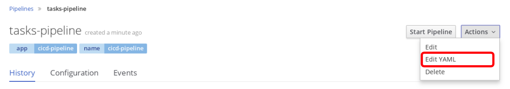
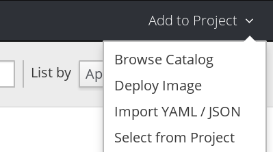
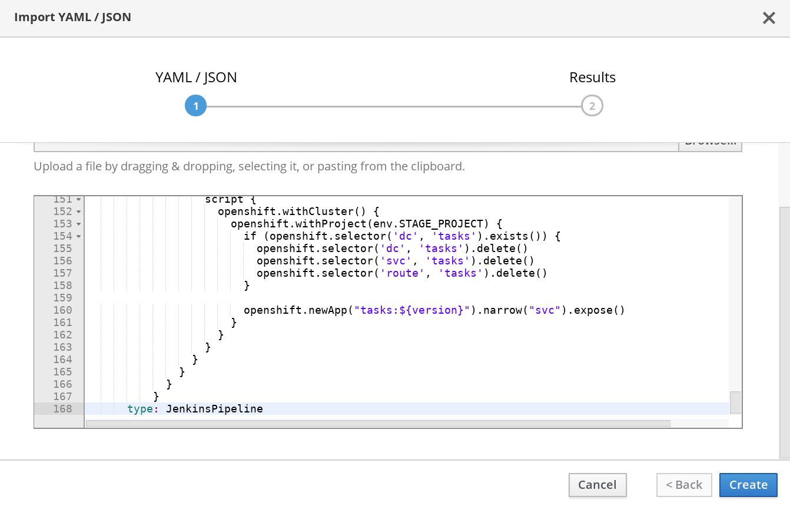
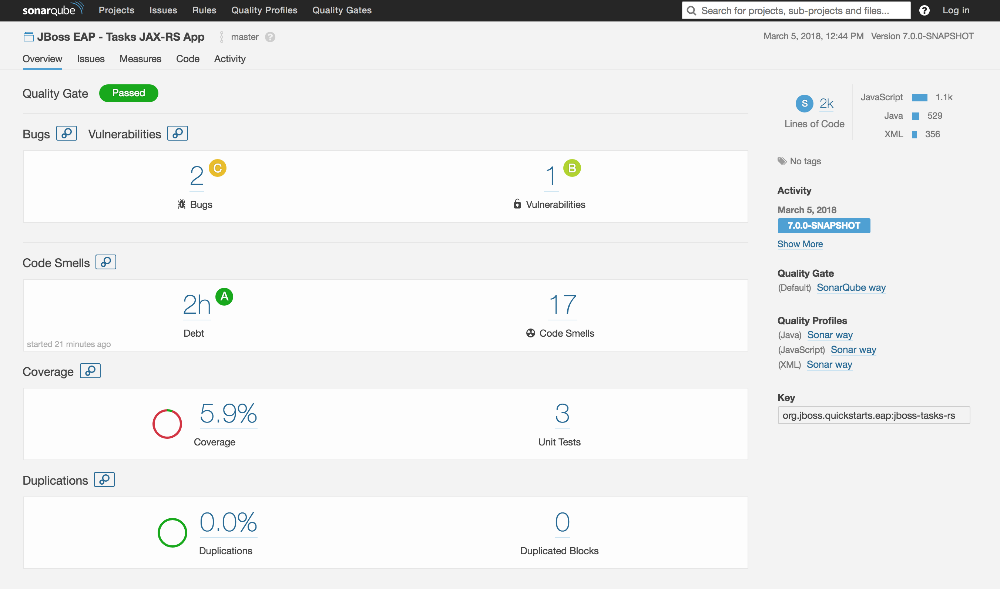

Verify Completed Pipeline
Before we kick off your pipeline, let's verify it.
In Builds > Pipelines > tasks-pipeline > Actions > Edit YAML

Take a look and see if it matches the below text. If not, please correct it.
apiVersion: v1
kind: BuildConfig
metadata:
annotations:
pipeline.alpha.openshift.io/uses: '[{"name": "jenkins", "namespace": "", "kind": "DeploymentConfig"}]'
labels:
app: cicd-pipeline
name: cicd-pipeline
name: tasks-pipeline
spec:
triggers:
- type: GitHub
github:
secret: "secret101"
- type: Generic
generic:
secret: "secret101"
runPolicy: Serial
source:
type: None
strategy:
jenkinsPipelineStrategy:
env:
- name: DEV_PROJECT
value: dev-user1
- name: STAGE_PROJECT
value: stage-user1
jenkinsfile: |-
def version, mvnCmd = "mvn -s configuration/cicd-settings-nexus3.xml"
pipeline {
agent {
label 'maven'
}
stages {
stage('Build App') {
steps {
git branch: 'eap-7', url: 'http://gogs:3000/gogs/openshift-tasks.git'
script {
def pom = readMavenPom file: 'pom.xml'
version = pom.version
}
sh "${mvnCmd} install -DskipTests=true"
}
}
stage('Test') {
steps {
sh "${mvnCmd} test"
step([$class: 'JUnitResultArchiver', testResults: '**/target/surefire-reports/TEST-*.xml'])
}
}
stage('Code Analysis') {
steps {
script {
sh "${mvnCmd} sonar:sonar -Dsonar.host.url=http://sonarqube:9000 -DskipTests=true"
}
}
}
stage('Archive App') {
steps {
sh "${mvnCmd} deploy -DskipTests=true -P nexus3"
}
}
stage('Create Image Builder') {
when {
expression {
openshift.withCluster() {
openshift.withProject(env.DEV_PROJECT) {
return !openshift.selector("bc", "tasks").exists();
}
}
}
}
steps {
script {
openshift.withCluster() {
openshift.withProject(env.DEV_PROJECT) {
openshift.newBuild("--name=tasks", "--image-stream=jboss-eap70-openshift:1.5", "--binary=true")
}
}
}
}
}
stage('Build Image') {
steps {
sh "rm -rf oc-build && mkdir -p oc-build/deployments"
sh "cp target/openshift-tasks.war oc-build/deployments/ROOT.war"
script {
openshift.withCluster() {
openshift.withProject(env.DEV_PROJECT) {
openshift.selector("bc", "tasks").startBuild("--from-dir=oc-build", "--wait=true")
}
}
}
}
}
stage('Create DEV') {
when {
expression {
openshift.withCluster() {
openshift.withProject(env.DEV_PROJECT) {
return !openshift.selector('dc', 'tasks').exists()
}
}
}
}
steps {
script {
openshift.withCluster() {
openshift.withProject(env.DEV_PROJECT) {
def app = openshift.newApp("tasks:latest")
app.narrow("svc").expose();
def dc = openshift.selector("dc", "tasks")
while (dc.object().spec.replicas != dc.object().status.availableReplicas) {
sleep 10
}
openshift.set("triggers", "dc/tasks", "--manual")
}
}
}
}
}
stage('Deploy DEV') {
steps {
script {
openshift.withCluster() {
openshift.withProject(env.DEV_PROJECT) {
openshift.selector("dc", "tasks").rollout().latest();
}
}
}
}
}
stage('Promote to STAGE?') {
steps {
timeout(time:15, unit:'MINUTES') {
input message: "Promote to STAGE?", ok: "Promote"
}
script {
openshift.withCluster() {
openshift.tag("${env.DEV_PROJECT}/tasks:latest", "${env.STAGE_PROJECT}/tasks:${version}")
}
}
}
}
stage('Deploy STAGE') {
steps {
script {
openshift.withCluster() {
openshift.withProject(env.STAGE_PROJECT) {
if (openshift.selector('dc', 'tasks').exists()) {
openshift.selector('dc', 'tasks').delete()
openshift.selector('svc', 'tasks').delete()
openshift.selector('route', 'tasks').delete()
}
openshift.newApp("tasks:${version}").narrow("svc").expose()
}
}
}
}
}
}
}
type: JenkinsPipeline
Verify your user Dev and Stage projects
In your pipeline text file, make sure <user> reflects your user # and project.
- name: DEV_PROJECT
value: dev-<user>
- name: STAGE_PROJECT
value: stage-<user>
Import pipeline into OpenShift (if not created already)
If you created your pipeline in a text editor, you can import your text file in OpenShift.
At the top right select Add to Project > Import YAML / JSON

Copy and Paste your pipeline from your text editor to your
Click Create and Close

Run Pipeline
Go to Builds > Pipeline
Click Start Pipeline for the pipeline you just created called tasks-pipeline.
Your pipeline should now execute through all the stages you created.
Go ahead and click View Log. This will take you to the Jenkins logs and you can follow the various stages in your pipeline.
When it asks to promote to stage, go ahead and promote it.

Explore Pipeline Run
- Explore the snapshots repository in Nexus and verify tasks is pushed to the repository
- Explore SonarQube and show the metrics, stats, code coverage, etc
- Explore Tasks - Dev project in OpenShift console and verify the application is deployed in the DEV environment
- Explore Tasks - Stage project in OpenShift console and verify the application is deployed in the STAGE environment
Sonarqube metrics, stats, and code coverage can be seen such as this screenshot below.
